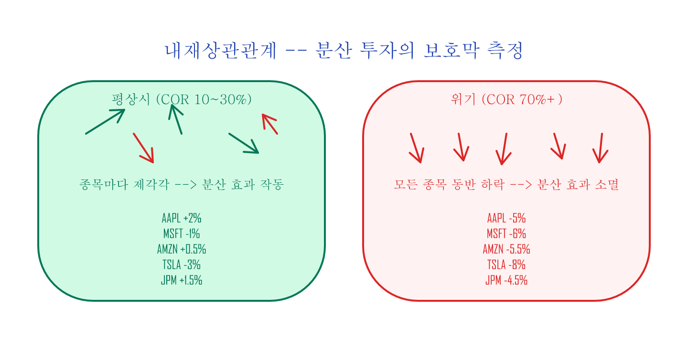
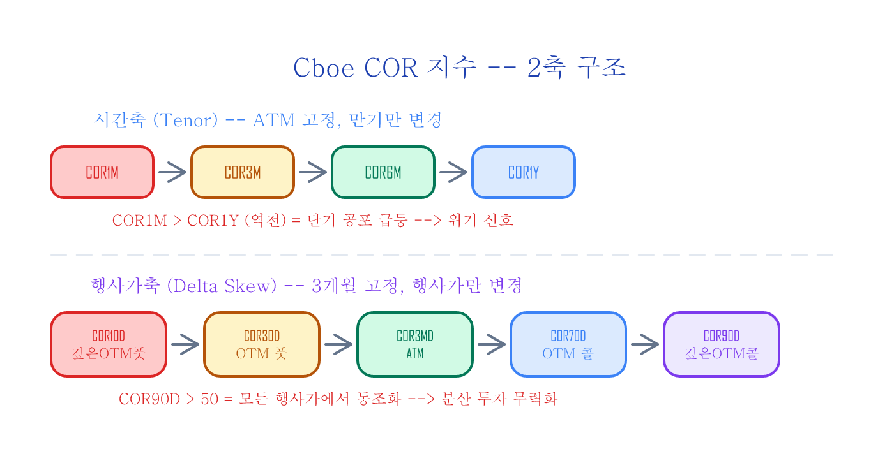
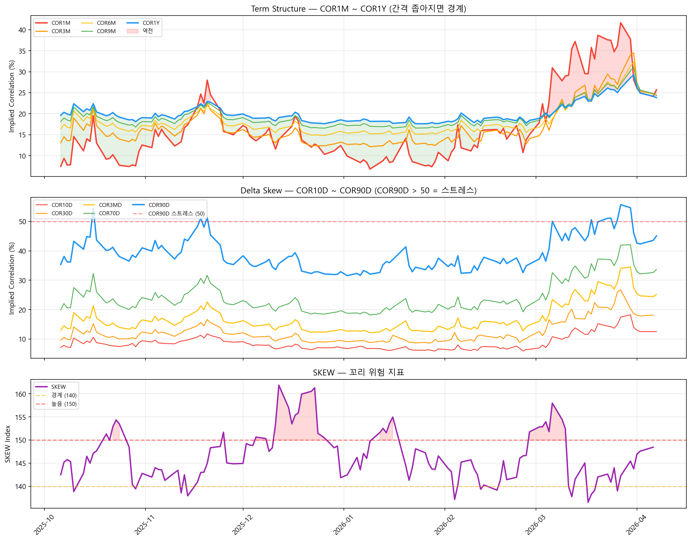
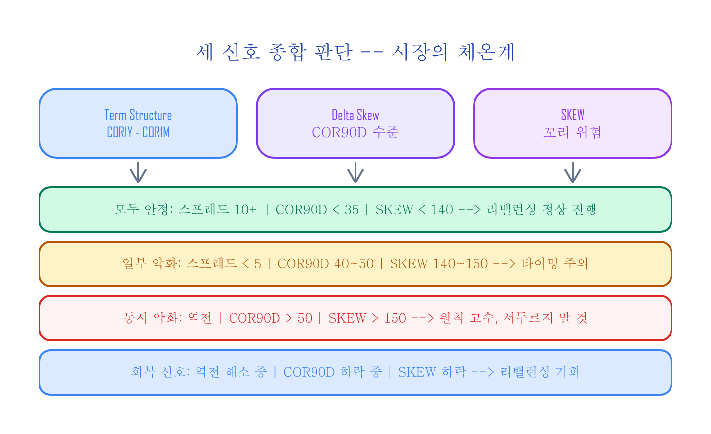

변동성 대시보드 — Correlation + Skew 추적¶
구글 시트 복사하기: CBOE Correlation Indices (데이터 기록용 템플릿)
Cboe가 공개하는 내재상관관계(COR) 지수들과 SKEW 지수를 매일 추적하면, 뉴스보다 빠르게 시장 참여자들의 심리 변화를 읽을 수 있습니다. 이 글에서는 구글 시트로 변동성 대시보드를 만들고, 세 가지 신호를 매일 1분이면 확인하는 방법을 정리합니다.
30초 미리보기: 매일 확인하는 3가지¶
| 신호 | 무엇을 보는가 | 안정 (예: 10/27) | 스트레스 (예: 10/16) |
|---|---|---|---|
| 만기 구조(Term Structure) 스프레드 | COR1Y - COR1M | 11.1 (넓음) | 2.9 (좁음) |
| 행사가별 쏠림(Delta Skew) | COR90D 수준 | 36.5 | 54.6 |
| SKEW 지수 | 극단적 폭락 위험(꼬리 위험) | 148.5 | 147.1 |
아래 용어가 낯설어도 괜찮습니다 — 바로 다음 섹션에서 하나씩 설명합니다. 세 신호가 동시에 악화되면 시장 스트레스가 구조적으로 높아지고 있다는 신호입니다.
핵심 개념: 3분 요약¶
내재상관관계(Implied Correlation)란¶
평소 S&P500의 500개 종목은 제각각 움직입니다 — 어떤 종목은 오르고, 어떤 종목은 내립니다. 이것이 분산 투자가 작동하는 이유입니다. 그런데 위기가 오면 모든 종목이 동시에 같은 방향으로 움직이기 시작합니다. 분산 투자의 보호막이 사라지는 순간입니다.
내재상관관계는 이 "동조화 수준"을 0~100%로 수치화한 것입니다. S&P500 지수 옵션의 내재변동성(IV: Implied Volatility — 옵션 가격에 녹아든 미래 변동성 기대치)과 상위 50개 종목의 개별 옵션 IV 사이의 관계로 계산합니다.
| 상태 | COR 수준 | 의미 |
|---|---|---|
| 평상시 | ~10-30% | 종목별로 각자 움직임 (분산 투자가 작동) |
| 스트레스 | 50% 이상 | 모든 종목이 같은 방향 (분산 효과 약화) |
| 위기 | 70%+ | 전면 동반 폭락 |

Cboe COR 지수 체계¶
Cboe는 내재상관관계를 두 축으로 나눠 제공합니다 (자세한 배경은 시장 심리 변동성 지수 참조):
시간축 (Tenor) — ATM 고정, 만기만 변경:
COR1M → COR3M → COR6M → COR9M → COR1Y
보통 먼 미래의 불확실성이 더 큰 법인데, 단기(COR1M)가 장기(COR1Y)를 추월한다면 "지금 당장 불이 났다"는 뜻입니다.
행사가축 (Delta Skew) — 3개월 고정, 행사가만 변경:
COR10D(등가격에서 먼 풋옵션 영역) → COR30D → COR3MD(등가격(ATM)) → COR70D → COR90D(등가격에서 먼 콜옵션 영역)
COR90D가 급등하면 깊은 OTM 영역까지 동조화가 퍼지고 있다는 뜻입니다.

SKEW 지수¶
S&P500 옵션 시장에서 극단적 폭락 위험, 일명 꼬리 위험(tail risk)을 측정합니다. 화재보험료가 갑자기 오르면 보험회사가 화재 위험이 높아졌다고 판단한 것이듯, SKEW가 오르면 기관이 "폭락 보험료"를 더 내고 있다는 뜻입니다.
| SKEW 수준 | 의미 |
|---|---|
| 120~135 | 평상시 |
| 140~150 | 경계 — 기관의 풋 매수 증가 |
| 150+ | 높은 꼬리 위험 인식 |
SKEW의 역사적 변화
2020년 이전에는 SKEW 평균이 ~115였고 140 이상은 매우 드물었습니다. 2020년 이후 구조적으로 상향 이동하여 130~145가 새로운 "평상시"에 가까워졌습니다. 위 기준은 현재(post-2020) 시장 환경을 반영합니다.
SKEW의 역설
SKEW는 폭락 직전보다 회복기에 더 높을 수 있습니다. 폭락 중에는 이미 풋을 보유한 상태이고, 회복 후 "다음 폭락"에 대비해 새로 풋을 사기 때문입니다. SKEW가 낮다는 것은 오히려 시장 바닥 근처일 수 있습니다.
1단계: 구글 시트 구조¶
시트를 복사하면 2개 탭이 있습니다:
| 탭 | 내용 | 데이터 |
|---|---|---|
| Tenor Indices (Term structure) | COR1M, COR3M, COR6M, COR9M, COR1Y + S&P500 | 일별 기록 |
| Delta Skew Indices | COR10D, COR30D, COR3MD, COR70D, COR90D + S&P500 + SKEW | 일별 기록 |
2단계: 데이터 업데이트¶
Cboe 웹사이트에서 각 지수의 일별 종가를 무료로 확인할 수 있습니다:
| 지수 | Cboe 대시보드 |
|---|---|
| COR1M | cboe.com/us/indices/dashboard/cor1m |
| COR3M | cboe.com/us/indices/dashboard/cor3m |
| COR6M | cboe.com/us/indices/dashboard/cor6m |
| COR1Y | cboe.com/us/indices/dashboard/cor1y |
| SKEW | cboe.com/us/indices/dashboard/skew |
각 대시보드에서 종가를 확인하고 시트에 행을 추가합니다. TradingView에서 CBOE:COR3M 등으로 실시간 차트도 가능합니다.
대시보드 차트¶
세 신호를 하나의 차트로 통합하면 구조적 스트레스를 한눈에 비교할 수 있습니다.

상단: COR1M~COR1Y Term Structure (간격 좁아지면 경계, 빨간 영역 = 역전). 중단: COR10D~COR90D Delta Skew (COR90D가 빨간 점선 50 위로 가면 스트레스). 하단: SKEW 지수 (140 이상 경계, 150 이상 높음).
3단계: 신호 읽기¶
신호 1: Term Structure 스프레드¶
COR1M과 COR1Y의 차이를 봅니다.
스프레드 = COR1Y - COR1M
| 스프레드 | 상태 | 의미 |
|---|---|---|
| 넓음 (10+) | 정상 | 단기 안정, 장기만 약간의 불확실성 |
| 좁아지는 중 (5 이하) | 경계 | 단기 상관관계 급등 → 공포 시작 |
| 역전 (음수) | 위험 | COR1M > COR1Y → 단기 동반 폭락 모드 |
Term Structure 역전은 2008년 금융위기와 2020년 코로나 폭락에서 관찰된 위기 신호입니다.
예시 — 스트레스 (2025-10-16):
COR1M = 19.48, COR1Y = 22.38
스프레드 = 2.9 ← 경계 구간
예시 — 안정 (2025-10-27):
COR1M = 7.40, COR1Y = 18.52
스프레드 = 11.12 ← 정상
신호 2: Delta Skew¶
COR90D의 절대 수준과 COR90D와 COR10D의 차이를 봅니다.
| 지표 | 정상 | 스트레스 |
|---|---|---|
| COR90D 수준 | 35 이하 | 50 이상 |
| COR90D - COR10D 차이 | 25+ (넓게 분산) | 좁아지는 중 (수렴) |
COR90D(깊은 OTM call 영역)가 50 이상으로 치솟으면, 시장 전체가 한 방향으로 동조화되고 있다는 뜻입니다. 차이가 좁아지면 모든 행사가에서 상관관계가 1.0으로 수렴 — 계란을 여러 바구니에 나눠 담았는데 바구니가 모두 같은 선반 위에 있었던 것입니다. 선반이 넘어지면 전부 깨집니다. 분산 투자가 작동하지 않는 상태입니다.
예시 — 스트레스 (2025-10-16):
COR90D = 54.60 ← 50 이상, 스트레스
COR10D = 10.57
신호 3: SKEW 지수¶
SKEW는 Delta Skew 탭에 함께 기록됩니다.
추이 예시:
| 날짜 | SKEW | S&P500 | 해석 |
|---|---|---|---|
| 10/6 | 142.5 | 6,740 | 평상시 |
| 10/10 | 138.9 | 6,553 | 하락 — 오히려 풋 비용 하락 |
| 10/22 | 152.9 | 6,699 | 기관 풋 매수 증가 |
데이터 출처: Cboe Global Indices
4단계: 종합 해석 — 세 신호 조합¶
| Term Structure | COR90D | SKEW | 시장 상태 | 대응 |
|---|---|---|---|---|
| 넓음 (10+) | 35 이하 | 낮음 | 안정 | 리밸런싱 정상 진행 |
| 좁아지는 중 | 40~50 | 상승 | 경계 | 리밸런싱 타이밍 주의 |
| 역전 | 50 이상 | 높음 | 스트레스 | 급변동 가능, 원칙 고수 |
| 역전 후 회복 | 하락 중 | 하락 | 회복 | 리밸런싱 기회 |
핵심: 세 신호가 동시에 악화되면 구조적 스트레스입니다. 하나만 악화되면 노이즈일 수 있습니다.

매일 사용하는 법¶
| 시점 | 할 일 | 소요 시간 |
|---|---|---|
| 장 마감 후 | Cboe 대시보드에서 COR + SKEW 종가 확인 | 30초 |
| 시트에 행 추가 | 30초 | |
| 3가지 신호 확인 | — |
체크리스트:
- [ ] Term Structure 스프레드: 넓음 / 좁아지는 중 / 역전
- [ ] COR90D 수준: 35 이하 / 40~50 / 50 이상
- [ ] SKEW: 정상 / 경계 / 높음
- [ ] 세 신호 동시 악화 여부
Python 버전¶
시트 대신 Python으로 데이터를 시각화합니다. Cboe 대시보드에서 데이터를 수동으로 CSV에 기록하거나, TradingView에서 내보내기합니다.
Python: 변동성 대시보드 차트 코드
import pandas as pd
import matplotlib.pyplot as plt
import matplotlib.dates as mdates
# CSV 로드 (시트에서 File > Download > CSV로 내려받은 파일)
# 예상 형식: DATE, COR1M, COR3M, COR6M, COR9M, COR1Y, S&P500
tenor = pd.read_csv('tenor_indices.csv', skiprows=2, parse_dates=['DATE'])
# 예상 형식: DATE, COR90D, COR70D, COR3M, COR30D, COR10D, S&P500, SKEW
skew = pd.read_csv('delta_skew_indices.csv', skiprows=2, parse_dates=['DATE'])
tenor = tenor.dropna(subset=['DATE'])
skew = skew.dropna(subset=['DATE'])
fig, axes = plt.subplots(3, 1, figsize=(14, 12), sharex=True)
# 1. Term Structure
for col, color in [('COR1M','#F44336'), ('COR3M','#FF9800'),
('COR6M','#FFC107'), ('COR9M','#4CAF50'), ('COR1Y','#2196F3')]:
axes[0].plot(tenor['DATE'], tenor[col], label=col, linewidth=1.5, color=color)
axes[0].set_ylabel('Implied Correlation (%)')
axes[0].set_title('Term Structure — COR1M ~ COR1Y')
axes[0].legend(loc='upper left', fontsize=8)
axes[0].grid(alpha=0.3)
# 2. Delta Skew
for col, color in [('COR10D','#F44336'), ('COR30D','#FF9800'),
('COR3M','#FFC107'), ('COR70D','#4CAF50'), ('COR90D','#2196F3')]:
axes[1].plot(skew['DATE'], skew[col], label=col, linewidth=1.5, color=color)
axes[1].set_ylabel('Implied Correlation (%)')
axes[1].set_title('Delta Skew — COR10D ~ COR90D')
axes[1].legend(loc='upper left', fontsize=8)
axes[1].grid(alpha=0.3)
# 3. SKEW
axes[2].plot(skew['DATE'], skew['SKEW'], color='#9C27B0', linewidth=2, label='SKEW')
axes[2].axhline(140, color='orange', ls='--', alpha=0.5, label='경계 (140)')
axes[2].axhline(150, color='red', ls='--', alpha=0.5, label='높음 (150)')
axes[2].set_ylabel('SKEW Index')
axes[2].set_title('SKEW — 꼬리 위험 지표')
axes[2].legend(loc='upper left', fontsize=8)
axes[2].grid(alpha=0.3)
axes[2].xaxis.set_major_formatter(mdates.DateFormatter('%Y-%m'))
plt.tight_layout()
plt.savefig('volatility_dashboard.png', dpi=150, bbox_inches='tight')
plt.show()
Python: 스프레드 자동 계산 + 경고 코드
# Term Structure 스프레드
tenor['spread'] = tenor['COR1Y'] - tenor['COR1M']
# 최근 상태 확인
latest = tenor.iloc[-1]
latest_skew = skew.iloc[-1]
print(f"=== {latest['DATE'].strftime('%Y-%m-%d')} 신호 ===")
spread = latest['spread']
print(f"Term Structure 스프레드: {spread:.1f}", end="")
print(" ← 역전!" if spread < 0 else " ← 경계" if spread < 5 else " ← 정상")
cor90d = latest_skew['COR90D']
print(f"COR90D: {cor90d:.1f}", end="")
print(" ← 스트레스" if cor90d > 50 else " ← 경계" if cor90d > 40 else " ← 정상")
skew_val = latest_skew['SKEW']
print(f"SKEW: {skew_val:.1f}", end="")
print(" ← 높음" if skew_val > 150 else " ← 경계" if skew_val > 140 else " ← 정상")
한계¶
-
EOD(장 마감) 데이터 — COR 지수는 장 마감 기준입니다. 장중 변화는 반영되지 않습니다.
-
구성 종목 변경 — S&P500 상위 50개 종목은 시가총액에 따라 정기적으로 교체됩니다. 과거 데이터와 현재 데이터의 구성 종목이 다를 수 있습니다.
-
SKEW의 불안정성 — 극단적 시장 상황에서 SKEW 계산이 불안정해질 수 있습니다. Cboe는 2025년부터 SKEW 방법론 개선을 검토 중입니다.
-
상관관계 ≠ 인과관계 — COR 급등이 반드시 폭락을 의미하지 않습니다. 단기 이벤트(실적 시즌, 연준 발표 등)로도 일시적 급등이 가능합니다.
마무리¶
이 대시보드는 시장의 체온계입니다:
- Term Structure 스프레드 — 단기 공포가 장기를 추월하는지
- COR90D — 시장 전체의 동조화 수준
- SKEW — 기관이 꼬리 위험에 얼마나 지불하는지
장기 투자자에게 이 대시보드의 가치는 타이밍이 아닌 맥락입니다:
- 세 신호가 모두 안정이면 → "리밸런싱해도 괜찮다"는 확인
- 세 신호가 동시에 악화되면 → "지금은 서두르지 말자, 원칙을 지키자"
- 회복 신호가 보이면 → "리밸런싱 기회, 기관도 진정되고 있다"
매일 1분이면 됩니다. 공포에 흔들리지 않고 원칙을 지키는 데 도움이 됩니다.
참고¶
- 시장 심리 변동성 지수 — Implied Correlation과 IV Surface
- 변동성 Skew — S&P500 지수 옵션의 썩소
- Cboe Implied Correlation Index White Paper (PDF)
- Cboe SKEW Index White Paper (PDF)
- Cboe Implied Correlation Indices
Cboe, VIX는 Cboe Exchange, Inc.의 등록 상표입니다. SPX, S&P 500은 S&P Global의 등록 상표입니다. 이 글은 Cboe 또는 S&P Global과 제휴 또는 보증 관계가 없습니다. 지수 데이터 출처: Cboe Global Indices.